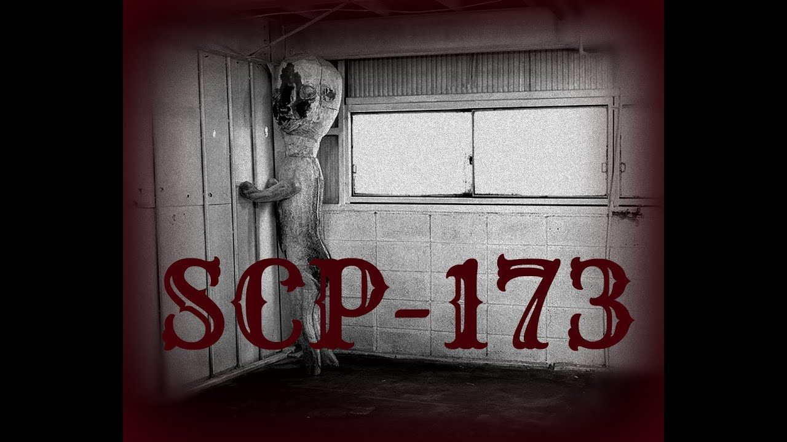
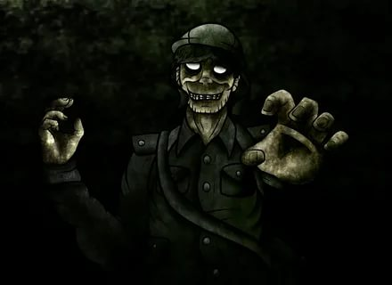

Hestory Fund
(Представленный ниже материал представляет собой историю развития вики-страницы SCP Foundation с самого начала до наших дней. Я поместил его сюда, чтобы мы могли легко вспомнить свое происхождение. Чтобы у пользователей был простой и интересный способ узнать, где мы были. И что мы собираемся делать. Если вы заметили какие-либо орфографические, грамматические или синтаксические ошибки, не стесняйтесь их исправлять. Если вы считаете, что написанное не соответствует действительности, напишите мне об этом, и я постараюсь по возможности объяснить или исправить недостатки. Надеюсь, что представленная здесь информация будет для вас полезной и информативной, и благодаря написанному вы узнаете что-то новое.)
Scp-173
(Завезен в Зону 19 в 1993 году. Происхождение до сих пор неизвестно. Он сделан из бетона и арматуры со следами аэрозольной краски Krylon(BloodEX). SCP-173 одушевлен и крайне враждебен)
Scp-106
(Физическое взаимодействие с SCP-106 запрещено ни при каких обстоятельствах. Разрешение на физическое взаимодействие может быть дано только с согласия не менее 8 из 12 членов совета O5. Это взаимодействие должно осуществляться в Зонах с максимальным уровнем безопасности AR-II и только после эвакуации всех сотрудников, кроме тех, которые необходимы для работы Зоны. Все сотрудники (научный персонал, служба безопасности, класс D и др.) Должны держаться на расстоянии шестидесяти метров от камеры содержания, приближаться разрешено только в случае нарушения условий содержания.) }.
() }